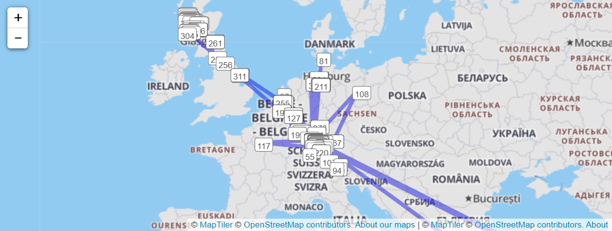
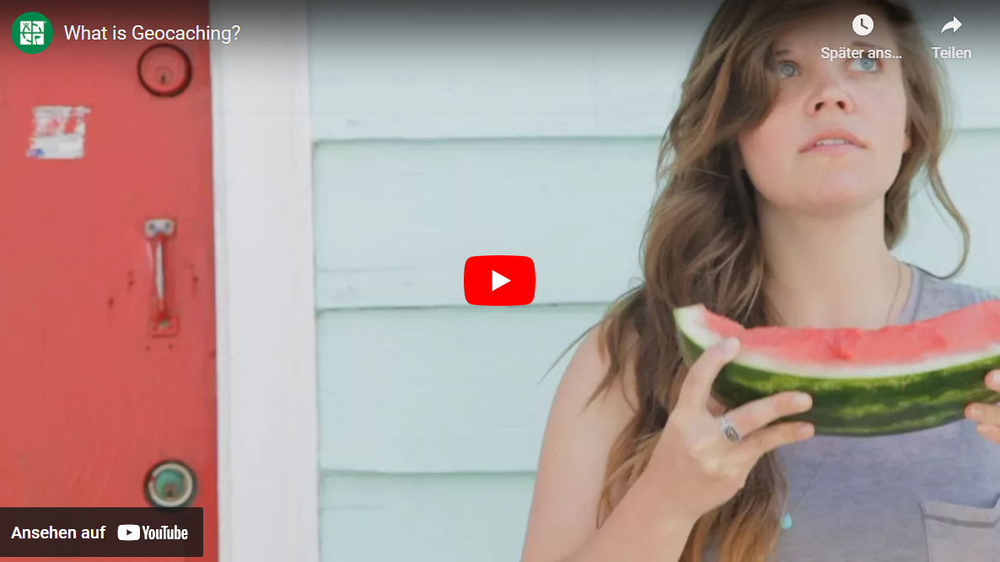

Our Trackable
The trackable "Nennen wir es Hugo" is following us while we're geocaching. It is measuring the air distance between all caches and in the summer 2022 we managed to travel more that 40.000 kilometers. That's equal the distance around the globe.

What is Geocaching?

Trackable: Nennen wir es Hugo